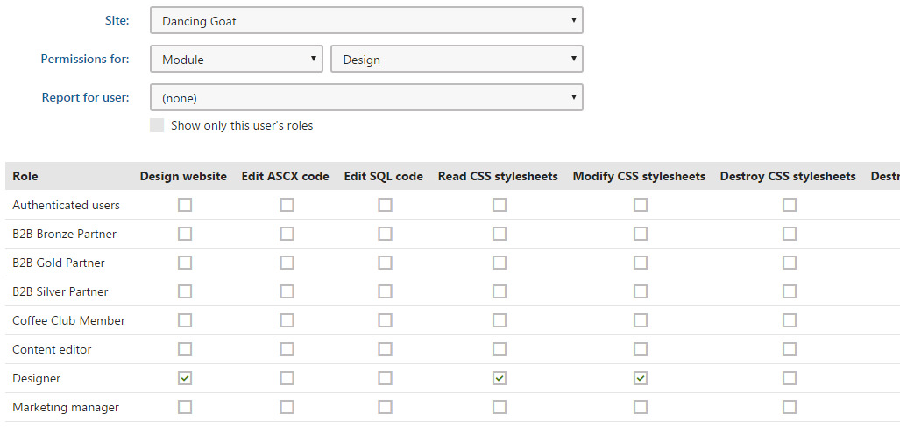

Configuring design permissions
The Design permission matrix is used to set up important permissions related to the design of page templates, related components, and the website's CSS styles.
To configure the design permissions:
Open the Permissions application.
In the first Permissions for drop-down list, choose Module.
In the second drop-down list, choose Design.
The changes you make on the permission matrix apply immediately.

The permission matrix of the Design module
You can assign the following permissions to members of the specified roles:
For security reasons, the Edit ASCX code and Edit SQL code permissions may only be assigned by users with the Global administrator privilege level.
|
Permission |
Description |
|
Design website |
Allows users to edit pages on the Design tab of the Pages application. Note that even though the changes on the Design tab are made on a specific website, this may also affect other sites in the system if they use the same shared page template. This permission also determines whether the given role is allowed to configure the properties of web parts through the On-site editing interface. |
|
Edit ASCX code |
Allows users to modify the ASCX code of page layouts and transformations. This permission does not affect the ability to edit the HTML versions of these objects. This should be considered a high‑level permission because it gives users the option to add and execute inline code. |
|
Edit SQL code |
Allows users to create or modify query objects and edit fields containing SQL code, such as the WHERE condition properties of web parts. This should be considered a high‑level permission because it gives users the power to write and execute SQL queries against the website's database. Users without the Edit SQL code permission can still set the Where condition, Order by and Columns properties of web parts, but may only use restricted SQL syntax as described below. Where conditions:
Order by expressions:
Columns expressions:
|
|
Read CSS stylesheets |
Allows users to access the CSS stylesheets application and view the code and other properties of CSS stylesheets. Users without the Administrator privilege level only have access to stylesheets assigned to the current site. |
|
Modify CSS stylesheets |
Allows users to create and edit CSS stylesheets (either in the CSS stylesheets application or in the Pages application on the General tab of individual pages). Users without the Administrator privilege level only have access to stylesheets assigned to the current site. |
|
Destroy CSS stylesheets |
Allows users to delete the version history of CSS stylesheet objects. |
|
Destroy transformations |
Allows users to delete the version history of transformation objects. |
|
Destroy page layouts |
Allows users to delete the version history of shared page layouts. |
|
Destroy page templates |
Allows users to delete the version history of page templates. |
|
Destroy web part containers |
Allows users to delete the version history of web part containers. |
|
Destroy web part layouts |
Allows users to delete the version history of web part layouts. |